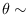
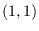
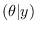
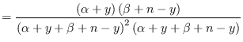
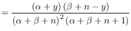
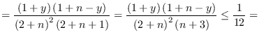
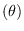

Next: 2.5d. Up: Modelos uniparamétricos Previous: Modelos uniparamétricos
Muestre que si la priori es uniforme entonces la media a posteriori, entonces la varianza a posterior es siempre menor a la varianza a priori. Sol: Sea beta
| Var |  | |
|  | ||
| Var |